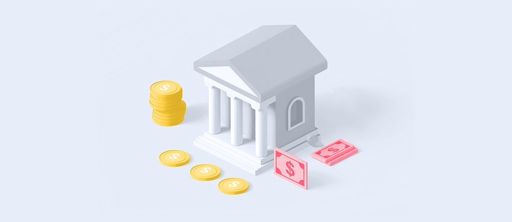

Remote Network and Router Management Platform
Elinext supported a complex infrastructure platform using React, Python, cloud, databases, and ongoing delivery.
Read the case studyProposal for The Amatriot Group
A practical bridge plan for safe React, Python, API, and QA work that can move outside classified systems while your cleared hire search continues.
Saw the open Senior Software Engineer role in Quantico. It asks for React, Python, REST APIs, Docker, AWS, and Top Secret clearance. That points to a live mission system, not a slow backfill.
The signal says Amatriot is adding full-stack strength for cleared work, while your site already sells speed-to-market support for secure environments. The role asks one person to own React, Python APIs, Docker, AWS, tests, docs, and user flows. That is a lot for a single hire, especially when clearance narrows the field. If the seat stays open, active programs can lose delivery time and senior staff spend more hours carrying implementation work.
Dedicated squad under your PM. It does not replace the cleared role. It handles approved non-classified work, then hands it back to Amatriot.
One delivery lead, two senior full-stack engineers, and one QA automation engineer.
Map which backlog items can be done outside classified systems, then define handoff rules, data limits, and review owners.
Stand up React and Python work on safe modules, with Docker dev setup, API docs, and weekly demos.
Add pytest, API contract tests, and Playwright checks so new changes do not add review debt.
Prepare onboarding notes, diagrams, and runbooks so the permanent cleared engineer starts with less context drag.
Support your hire ramp for thirty days, then transfer code, tests, and decisions to the internal owner.
Elinext is a full-cycle software development company founded in 1997, with about 700 in-house specialists and no freelancers. We build web, backend, QA, DevOps, and AI work for clients across the US, Europe, and Asia. For Amatriot, the fit is a managed squad that can work under your PM on non-classified modules, tests, docs, and delivery support. Elinext holds ISO 9001 and ISO 27001, which matters when work must be controlled. Our named customers include Siemens, Broadcom, Volkswagen, TRUMPF, and TUI. That gives the bridge team above a serious delivery base.
Elinext supported a complex infrastructure platform using React, Python, cloud, databases, and ongoing delivery.
Read the case study
Elinext added manual and automated testing discipline for a high-risk, compliance-heavy web system.
Read the case study